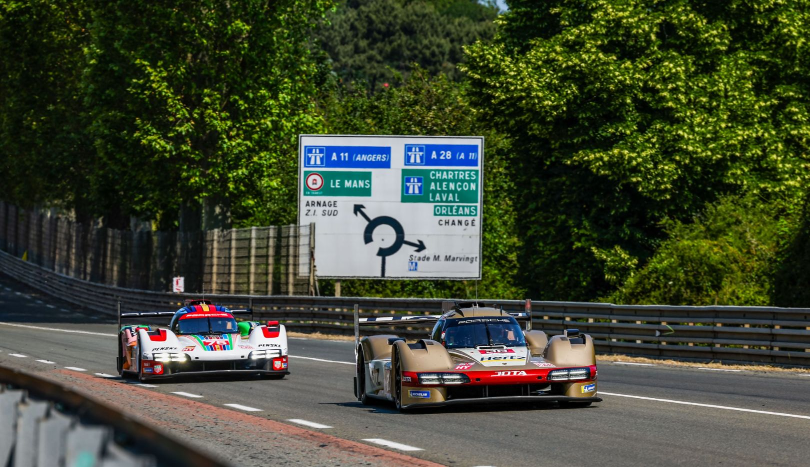

CIRCUIT DE LA SARTHE · FRANCE
24 HOURS.
ONE LEGEND.
Speed, endurance and engineering. Discover the race that pushes both machines and drivers to their limits.
EXPLORE THE RACE ↓01 / THE CIRCUIT
A LAP LIKE NO OTHER.
The Circuit de la Sarthe combines permanent racing facilities with public roads. Its long straights, technical corners and Porsche Curves make it one of endurance racing's great challenges.
For 24 hours, drivers battle changing light, traffic and fatigue. Every lap demands precision, commitment and trust in the machinery beneath them.

02 / THE MACHINES
BUILT TO ENDURE.
Modern Hypercars combine aerodynamic efficiency, advanced engineering and relentless performance. Every lap demands speed, precision and reliability.

The Toyota TS050 Hybrid made endurance racing history, winning Le Mans in 2018, 2019 and 2020. Its combination of a twin-turbo V6 engine and hybrid technology helped Toyota dominate the top class during this era.
03 / THE LEGACY
HISTORY IN EVERY LAP.
Since 1923, the 24 Hours of Le Mans has tested endurance, inspired engineering innovation and created unforgettable motorsport moments.
THE BEGINNING
The first 24 Hours of Le Mans takes place in France, beginning a legendary endurance racing tradition.
TOYOTA MAKES HISTORY
Toyota wins Le Mans overall for the first time, with the TS050 Hybrid taking victory.
100 YEARS OF LE MANS
The race celebrates its centenary, marking 100 years since the first event in 1923.